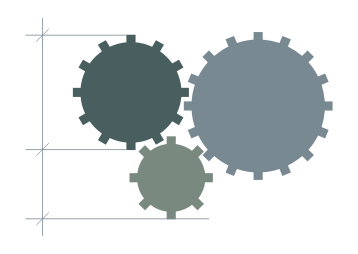

ERP Systems
Development and improvement of business systems, data records, reporting and operational processes.

Software • ERP • Automation
I develop and improve ERP systems, integrations and internal tools, with a focus on reducing manual work and increasing efficiency.

Practical solutions for business and system-level problems.
Development and improvement of business systems, data records, reporting and operational processes.
Connecting internal systems with external platforms, services and digital business processes.
Reducing manual work through automation of data flows and business operations.
Practical tools developed for everyday work.
Tool for exporting data from DataTable objects to Excel with automatic formatting and structured tables.
Simple logging system for events, errors and application activity.
Utility for working with SQL Server databases, parameterized queries and data manipulation.
Experience across software development, ERP systems, IT infrastructure and business process improvement.
Focused on systems integration, automation and optimization of operational processes.
View experience →If you need support with ERP systems, automation, systems integration or internal tools development, feel free to contact me.
Contact me